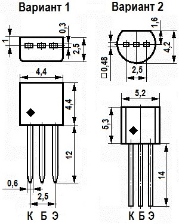
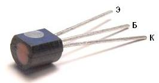
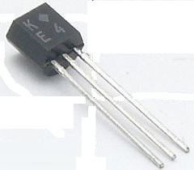

Транзистор КТ209
Транзистор КТ209 - усилительный, эпитаксиально-планарный, кремниевый, структуры p-n-p. Нормируется по коэффициенту шума на частоте 1 кГц. Применяется в импульсных и усилительных модулях, а также в различных блоках герметизированной аппаратуры. Транзисторы КТ209Б1 и КТ209В1 выпускаются специально для применения в телевизионных приёмниках.
Транзистор КТ209 выпускаются в двух вариантах корпусов (рис. 1).

Оба варианта исполнения имеют пластмассовый корпус и гибкие выводы.
Масса транзистора КТ209 не более 0,3 г.
Маркировка транзисторов КТ209 может быть выполнена (рис. 2, табл. 1) несколькими способами:
- Буква типономинала на корпусе и знак ♦ (рис. 2, справа);
- На боковой поверхности имеется метка серого цвета, а на торце транзистора метка, соответствующего типономинала (рис. 2, слева).


Таблица 1
| Транзистор | Вариант 1 | Вариант 2 |
|---|---|---|
| КТ209А | А | тёмно-красная |
| КТ209Б | Б | жёлтая |
| КТ209Б1 | Б1 | |
| КТ209В | В | тёмно-зелёная |
| КТ209В1 | В1 | |
| КТ209Г | Г | голубая |
| КТ209Д | Д | синяя |
| КТ209Е | Е | белая |
| КТ209Ж | Ж | коричневая |
| КТ209И | И | серебристая |
| КТ209К | К | оранжевая |
| КТ209Л | Л | светло-табачная |
| КТ209М | М | серая |
Таблица 2
| Коэффициент передачи тока (статический). Схема ОЭ. Uкб = 1 В, Iк = 30 мА: | |
| Т = +25°C: | |
| КТ209А, КТ209Г, КТ209Ж, КТ209Л | 20...60 |
| КТ209Б, КТ209Д, КТ209И, КТ209М | 40...120 |
| КТ209В, КТ209Е | 80...240 |
| КТ209К | 80...160 |
| КТ209Б1, не менее | 12 |
| КТ209В1, не менее | 30 |
| Т = +100°C: | |
| КТ209А, КТ209Г, КТ209Ж, КТ209Л | 20...120 |
| КТ209Б, КТ209Д, КТ209И, КТ209М | 40...240 |
| КТ209В, КТ209Е | 80...480 |
| КТ209К | 80...320 |
| КТ209Б1, не менее | 12 |
| КТ209В1, не менее | 30 |
| Т = -45°C: | |
| КТ209А, КТ209Г, КТ209Ж, КТ209Л | 10...60 |
| КТ209Б, КТ209Д, КТ209И, КТ209М | 20...120 |
| КТ209В, КТ209Е | 40...240 |
| КТ209К | 40....160 |
| КТ209Б1, не менее | 6 |
| КТ209В1, не менее | 15 |
| Граничная частота коэффициента передачи тока в схеме с ОЭ при Uкб = 5 В, Iк = 10 мА, не менее: |
5 МГц |
| Коэффициент шума при Iк = 0.2 мА, Uкэ = 5 В, f = 1 кГц для КТ209В, КТ209Е, КТ209К, не более: |
5 дБ |
| Напряжение насыщения К-Э, при Iк = 300 мА, Iб = 30 мА, не более |
0.4 В |
| Напряжение насыщения Б-Э, при Iк = 300 мА, Iб = 30 мА, не более | 1.5 В |
| Ток эмиттера (обратный), при Uэб = Uэб max, не более | 1 мкА |
| Входное сопротивление в режиме малого сигнала в схеме ОЭ, при Uкэ = 5 В, Iк = 5 мА | 130...2500 Ом |
| Ёмкость коллекторного перехода при Uкб = 10 В, f = 500 КГц, не более: | 50 пФ |
| Ёмкость коллекторного перехода при Uэб = 0,5 В, f = 1 МГц, не более: | 100 пФ |
Таблица 3
| Напряжение К-Б (постоянное): | |
| при Т = +25...+100°C: | |
| КТ209А, КТ209Б, КТ209В, КТ209Б1, КТ209В1 | 15 В |
| КТ209К, КТ209Д, КТ209Е | 30 В |
| КТ209Ж, КТ209И, КТ209К | 45 В |
| КТ209Л, КТ209М | 60 В |
| при Т = ?45°C: | |
| КТ209А, КТ209Б, КТ209В, КТ209Б1, КТ209В1 | 10 В |
| КТ209К, КТ209Д, КТ209Е | 25 В |
| КТ209Ж, КТ209И, КТ209К | 40 В |
| КТ209Л, КТ209М | 55 В |
| Напряжение К-Э (постоянное) при Rбэ ≤ 10 кОм: | |
| при Т = +25...+100°C: | |
| КТ209А, КТ209Б, КТ209В, КТ209Б1, КТ209В1 | 15 В |
| КТ209К, КТ209Д, КТ209Е | 30 В |
| КТ209Ж, КТ209И, КТ209К | 45 В |
| КТ209Л, КТ209М | 60 В |
| при Т = -45°C: | |
| КТ209А, КТ209Б, КТ209В, КТ209Б1, КТ209В1 | 10 В |
| КТ209К, КТ209Д, КТ209Е | 25 В |
| КТ209Ж, КТ209И, КТ209К | 40 В |
| КТ209Л, КТ209М | 55 В |
| Напряжение Э-Б (постоянное): | |
| при Т = +25...+100°C: | |
| КТ209Б1 | 5 В |
| КТ209А, КТ209Б, КТ209В, КТ209Г, КТ209Д, КТ209Е, КТ209В1 |
10 В |
| КТ209Ж, КТ209И, КТ209К, КТ209Л, КТ209М | 15 В |
| Ток коллектора (постоянный): | 300 мА |
| Ток коллектора (импульсный): | 500 мА |
| Ток базы (постоянный): | 100 мА |
| Рассеиваемая мощность коллектора (постоянная): | |
| T = -45...+45°C | 200 мВт |
| T = +100°C | 62,5 мВт |
| Тепловое сопротивление переход-среда | 0,45°C/мВт |
| Температура p-n перехода | +125°C |
| Рабочая температура (окружающей среды) | -45 ... +100°C |
При Т > +45°C Pк макс уменьшается линейно.